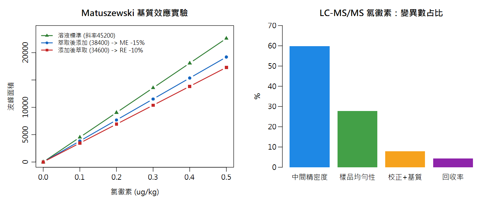

Part 3 進階延伸／第 12 章（建議先修：Ch4 迴歸、Ch9 模擬法、Ch10 案例③）
進階案例：LC-MS/MS 串聯質譜的不確定度評估 Case ④ LC-MS/MS — Matrix Effects, SIL-IS & Weighted Calibration
同一片茶葉，萃取液直接打 LC-MS/MS 訊號掉一半；同位素內標一下去，數據立刻變穩。兩百萬的儀器也要靠統計觀念才玩得轉。
🔑 課前暖身
為什麼兩百萬的儀器也會被騙？因為樣品裡的油脂、鹽類會「搶走」儀器的電離能量——這叫基質效應。
解法很聰明：請一個化學雙胞胎（同位素內標）一起被欺負，用比值校正就抵銷了。
本章新詞先認識：基質效應＝樣品背景對訊號的干擾；SIL-IS＝同位素標記的雙胞胎內標；1/x 加權＝痕量分析必備的迴歸修正；離子比＝定性的身分證檢查。
名詞卡住了？回 Ch0 名詞圖鑑 查白話解釋與比喻。
本章新詞先認識：基質效應＝樣品背景對訊號的干擾；SIL-IS＝同位素標記的雙胞胎內標；1/x 加權＝痕量分析必備的迴歸修正；離子比＝定性的身分證檢查。
名詞卡住了？回 Ch0 名詞圖鑑 查白話解釋與比喻。
學習目標
- 說出 LC-MS/MS 有別於 HPLC-UV/GC 的關鍵不確定度來源：基質效應
- 會設計並計算 Matuszewski 三組實驗（ME%、RE%、PE%）
- 理解同位素內標（SIL-IS）如何補償基質效應，殘餘不確定度如何計入
- 知道痕量分析為何要用 1/x 加權校正，並會用 Monte Carlo 求反推濃度的區間
- 完成氯黴素在蝦仁的完整預算與限量符合性判定
🧪 情境
以電噴灑電離（ESI）LC-MS/MS（三重四極柱，MRM 模式）測定蝦仁中氯黴素
（chloramphenicol，禁藥，管制界限 MRPL = 0.3 μg/kg）。
痕量層級 + 複雜基質 —— 這是 LC-MS/MS 的主場，也是不確定度評估最挑戰的戰場。
12.1 LC-MS/MS 有什麼不一樣？
| 議題 | HPLC-UV / GC-FID（Ch10 案例③） | LC-MS/MS（本章） |
|---|---|---|
| 基質效應 | 小（偵測器對基質不敏感） | 主角：ESI 電離被共同析出物壓制/增強，隨基質與滯留時間變化 |
| 濃度層級 | mg/kg 級 | μg/kg 級（痕量）→ 相對變異大、異質變異 |
| 校正策略 | 溶劑校正即可 | 同位素內標 + 基質匹配校正（或標準添加） |
| 定性確認 | 滯留時間 | 兩支以上離子對 + 離子比 ±30%（SANTE 準則） |
⚡ 核心觀念
LC-MS/MS 的質譜偵測器「看見」的是被電離的分子。
基質中的油脂、鹽類、共析出物會搶走電離能量 → 同濃度的分析物訊號被壓制（或增強）。
不處理基質效應，校正線本身就是偏倚的來源。
12.2 Matuszewski 三組實驗：把基質效應量化
教科書級的診斷實驗（Matuszewski et al. 2003）：配三組校正線，比較斜率：
📄 原始文獻
Matuszewski, B. K.; Constanzer, M. L.; Chavez-Eng, C. M. "Strategies for the Assessment of Matrix Effect in Quantitative Bioanalytical Methods Based on HPLC−MS/MS."
Analytical Chemistry 2003, 75 (13), 3019–3030.
DOI: 10.1021/ac020361s
| 組別 | 做法 | 斜率含義 |
|---|---|---|
| A 溶液標準 | 標準品溶於移動相 | 理想電離效率 |
| B 萃取後添加 | 空白基質先萃取，再添加標準品 | 純「電離」表現 |
| C 添加後萃取 | 先添加再萃取（像真樣品） | 電離 + 萃取損失 |
ME% = (斜率B/斜率A − 1) × 100 = (38400/45200 − 1)×100 = −15.0%（離子壓制）
RE% = (斜率C/斜率B − 1) × 100 = (34600/38400 − 1)×100 = −9.9%（萃取回收）
PE% = (斜率C/斜率A − 1) × 100 = −23.5%（整體流程效率）
RE% = (斜率C/斜率B − 1) × 100 = (34600/38400 − 1)×100 = −9.9%（萃取回收）
PE% = (斜率C/斜率A − 1) × 100 = −23.5%（整體流程效率）
同位素內標（SIL-IS）：LC-MS/MS 的護身符
加入穩定同位素標記內標（如氯黴素-d5）——它與分析物化學性質幾乎相同、 滯留時間相同、同時電離，所以基質壓制對兩者一視同仁。 用「分析物面積 ÷ 內標面積」的比值做校正線，基質效應大幅抵銷：

圖 12-1 左：Matuszewski 三條校正線（斜率遞減＝壓制）；右：氯黴素案例的變異數占比
加入 SIL-IS 後重跑三組實驗（面積比斜率）：ME% 從 −15.0% 縮到 −3.9%、RE% 到 −0.8%。 殘餘的基質效應變異（本例估 0.08）計入預算。
12.3 1/x 加權校正：痕量級的必備技巧
痕量分析的量測 SD 常與濃度成正比（相對誤差固定，0.02 μg/kg 處的絕對噪訊遠小於 0.5 處）。 普通最小平方（OLS）假設變異固定，會讓高濃度點主宰迴歸 → 低濃度反推嚴重偏倚。
解法：1/x 加權（SANTE/多數法規指引標準做法）。實測對照（本課程模擬數據）：
| 名義濃度 (μg/kg) | 0.02 | 0.05 | 0.10 | 0.20 | 0.50 |
|---|---|---|---|---|---|
| OLS 回算誤差 % | +14.3 | +6.3 | −2.6 | −2.9 | +0.5 |
| 1/x 加權回算誤差 % | +2.5 | +2.5 | −3.8 | −2.8 | +1.5 |
低濃度端誤差從 +14.3% 壓到 +2.5% —— 對限量 0.3 μg/kg 的氯黴素，這 12 個百分點就是判定生死。
🔗 串聯第 9 章的技巧
加權迴歸的反推區間用偏微分公式很繁瑣（QUAM E.4 加權版）。我們直接用 Monte Carlo：
按「變異數 ∝ 濃度」重新模擬 5000 條校正線 → 每條反推一次未知樣品 →
直接讀取 2.5%/97.5% 分位數。本例得 95% 區間 [0.019, 0.023] μg/kg。
12.4 完整預算：氯黴素在蝦仁
量測模型（內部驗證法，同 Ch10 案例③的邏輯）： w = (儀器讀值 / Rec) × Fhom，儀器讀值已含 SIL-IS 同位素稀釋校正。
| 成分 | 相對標準不確定度 | 來源與估法 |
|---|---|---|
| 中間精密度 | 0.22 | 驗證期不同天/人/校正週期的樣品數據（SANTE 風格） |
| 樣品均勻性 | 0.15 | 痕量污染物在蝦肉組織的分布（最壞情境模型） |
| 校正＋基質殘餘 | 0.08 | SIL-IS＋基質匹配校正後的殘餘基質效應 |
| 回收率偏倚 | 0.06 | 加標回收平均 90%，平均值的標準誤＋顯著性 |
uc(w)/w = \(\sqrt{(0.22² + 0.15² + 0.08² + 0.06²)}\) = 0.28
儀器讀值 0.19 μg/kg → 回收率修正 w = 0.19/0.90 = 0.21 μg/kg
U = 2 × 0.28 × 0.21 = 0.12 → 報告 (0.21 ± 0.12) μg/kg（k=2） 變異數占比：中間精密度 60% > 均勻性 28% ≫ 校正 8% ≫ 回收率 4%
儀器讀值 0.19 μg/kg → 回收率修正 w = 0.19/0.90 = 0.21 μg/kg
U = 2 × 0.28 × 0.21 = 0.12 → 報告 (0.21 ± 0.12) μg/kg（k=2） 變異數占比：中間精密度 60% > 均勻性 28% ≫ 校正 8% ≫ 回收率 4%
12.5 符合性判定與「決策支持」
MRPL = 0.3 μg/kg：0.21 + 0.12 = 0.33 > 0.3、0.21 − 0.12 = 0.09 < 0.3 → 灰色地帶（情境 iii，第 8 章）。此時 Monte Carlo 可以給管理層更細的資訊：
P(真值 > 0.3) ≈ 7%
以 N(0.21, 0.06) 模擬 20 萬次：約 7% 的機率真值超過管制界限——「可能超標但證據不充分」
📋 SANTE 定性確認（定量之前的事）
離子比：樣品 0.85 vs 標準 0.95，容許差 ±30%（相對）→ [0.665, 1.235] ✓ 合格；
滯留時間差 0.02 min < 0.1 min ✓。定性「確認」成立後，定量不確定度才登場。
兩者一起構成完整的「檢出且定量」報告。
# ====== 案例(4) LC-MS/MS 氯黴素 (完整腳本，下載後可執行) ======
# --- Part A. Matuszewski 基質效應 ---
slope_solvent <- 45200; slope_post <- 38400; slope_pre <- 34600
ME <- slope_post/slope_solvent - 1 #> -0.150 (離子壓制)
RE <- slope_pre /slope_post - 1 #> -0.099 (萃取回收)
PE <- slope_pre /slope_solvent - 1 #> -0.235
# 加入 SIL-IS (面積比校正) 後：
s_sol <- 1.020; s_post <- 0.980; s_pre <- 0.972
round(c(ME_IS = s_post/s_sol - 1, RE_IS = s_pre/s_post - 1), 3)
#> ME_IS=-0.039 RE_IS=-0.008 (基質效應被抵銷!)
# --- Part B. 1/x 加權校正 vs OLS ---
conc <- c(0.02, 0.05, 0.10, 0.20, 0.50)
set.seed(11)
ratio <- 0.001 + 2*conc + rnorm(5, 0, sqrt(4e-4*conc)) # 比例誤差
fit_ols <- lm(ratio ~ conc)
fit_w <- lm(ratio ~ conc, weights = 1/conc)
backcalc <- function(fit, y) (y - coef(fit)[1]) / coef(fit)[2]
round((backcalc(fit_ols, ratio)/conc - 1)*100, 1)
#> 低濃度 0.02 處 OLS 偏到 +14.3%
round((backcalc(fit_w, ratio)/conc - 1)*100, 1)
#> 1/x 加權只剩 +2.5%!
# Monte Carlo 求反推濃度的 95% 區間 (變異數與濃度成正比)
y_obs <- 0.0405
set.seed(1); N <- 5000
x_mc <- replicate(N, {
y_star <- fitted(fit_w) + rnorm(5, 0, sqrt(4e-4*conc))
bw <- lm(y_star ~ conc, weights = 1/conc)
backcalc(bw, y_obs)
})
round(quantile(x_mc, c(.025,.975)), 3) #> 0.019 ~ 0.023
# --- Part C. 預算 (內部驗證法) ---
rel <- c(precision = 0.22, cal_matrix = 0.08,
recovery = 0.06, homogeneity = 0.15)
rel_uc <- sqrt(sum(rel^2)) #> 0.284
result <- 0.19 / 0.90 #> 0.211 (回收率修正)
U <- 2 * rel_uc * result
sprintf("氯黴素 = (%.2f ± %.2f) ug/kg (k=2)", result, U)
#> "氯黴素 = (0.21 ± 0.12) ug/kg (k=2)"
# --- Part D. 符合性 + 決策支持 ---
MRL <- 0.3
result + U > MRL & result - U < MRL #> TRUE (灰色地帶)
set.seed(2)
mean(rnorm(200000, result, rel_uc*result) > MRL)
#> 0.069 -> 真值超過限量的機率約 7%
# --- 附：SANTE 離子比確認 ---
ion_s <- 0.85; ion_std <- 0.95
abs(ion_s - ion_std) <= 0.30 * ion_std #> TRUE (定性確認成立)
R Console輸出 output
ME_IS RE_IS -0.039 -0.008 [1] 14.3 6.3 -2.6 -2.9 0.5 [1] 2.5 2.5 -3.8 -2.8 1.5 2.5% 97.5% 0.019 0.023 [1] "氯黴素 = (0.21 ± 0.12) ug/kg (k=2)" [1] TRUE [1] 0.069185 [1] TRUE
🎯 LC-MS/MS 案例的行動清單
① 新方法先跑 Matuszewski 三組實驗，量化基質效應
② 痕量目標物一律上 SIL-IS（沒有同位素內標時，改基質匹配校正或標準添加法，並放大校正項的 u）
③ 校正一律 1/x 加權，並檢查低濃度回算偏倚（back-calculation table）
④ 預算老大仍是中間精密度——長期 QC 數據是唯一正解
⑤ 灰色地帶時，用 Monte Carlo 給「超標機率」，讓決策有數字可依
② 痕量目標物一律上 SIL-IS（沒有同位素內標時，改基質匹配校正或標準添加法，並放大校正項的 u）
③ 校正一律 1/x 加權，並檢查低濃度回算偏倚（back-calculation table）
④ 預算老大仍是中間精密度——長期 QC 數據是唯一正解
⑤ 灰色地帶時，用 Monte Carlo 給「超標機率」，讓決策有數字可依
📊 Excel 也會算：基質效應與離子比
📊 沒有 R 也能動手
LC-MS/MS 的診斷指標都是「斜率比值」，用 SLOPE 配兩欄數據即可：
1/x 加權迴歸 Excel 無內建，需陣列公式或加權欄輔助——痕量分析建議直接用 R（本章示範）或儀器軟體。
| 指標 | Excel 公式 | 說明 |
|---|---|---|
| 斜率 A（溶液） | =SLOPE(y_A, x) | 45200 |
| 斜率 B（萃取後添加） | =SLOPE(y_B, x) | 38400 |
| 基質效應 ME% | =(B/A−1)*100 | → −15.0%（壓制） |
| 回收率 RE% | =(C/B)*100 | 萃取損失 |
| 離子比 | =定性離子峰面積/定量離子峰面積 | 需落在參考值 ±30% |
12.6 參考文獻
- Matuszewski, B. K.; Constanzer, M. L.; Chavez-Eng, C. M. Strategies for the Assessment of Matrix Effect in Quantitative Bioanalytical Methods Based on HPLC−MS/MS. Anal. Chem. 2003, 75 (13), 3019–3030. https://doi.org/10.1021/ac020361s
- Ellison, S. L. R.; Williams, A. (eds.) Eurachem/CITAC Guide CG 4: Quantifying Uncertainty in Analytical Measurement, 3rd ed., QUAM:2012.P1. www.eurachem.org
- Smith, J. S. Evaluation of Analytical Data. In Nielsen’s Food Analysis, 6th ed.; Ismail, B. P., Nielsen, S. S., Eds.; Springer, 2024; Chapter 4.
- European Commission, SANTE/11312/2021: Analytical Quality Control and Method Validation Procedures for Pesticide Residues（離子比 ±30%、滯留時間容許差之依據）.